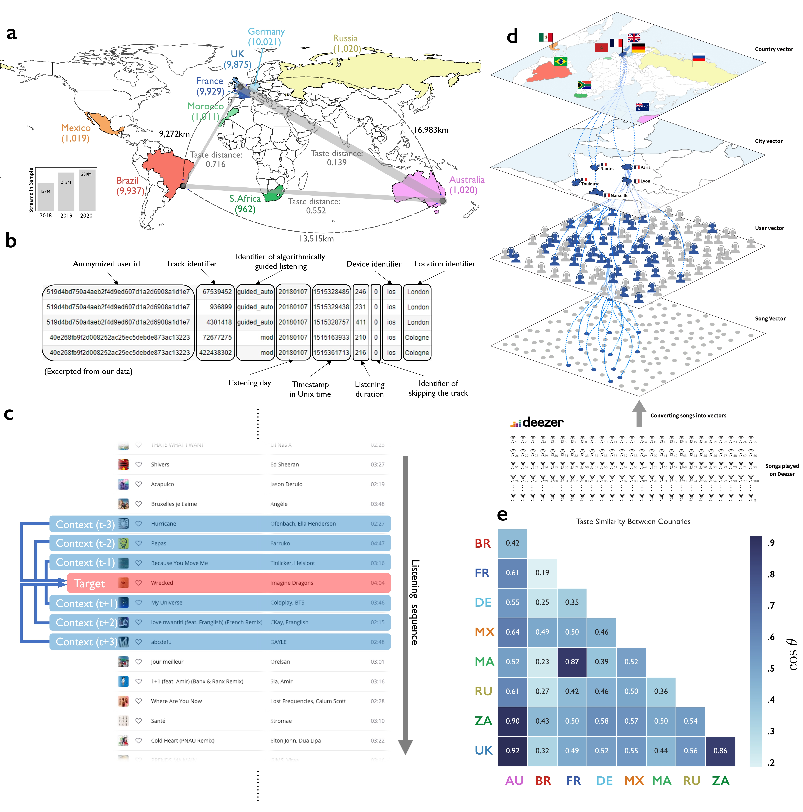

I am a PhD candidate in Management at INSEAD in Fontainebleau, France. My research explores
the antecedents and consequences of novelty and innovation at both the individual and organizational levels.
I specifically focus on creative industries such as music, films, publishing, and contemporary arts as my empirical settings.
In doing so, I utilize various organizational theories as a theoretical framework and employ computational content analytic tools across my projects.
Research interests:
Organization Theory
Antecedents and Consequences of Creativity, Novelty, and Innovation
Wharton-INSEAD Doctoral Consortium (Singapore), Nov 2023
Creative Industries Conference (INSEAD, Fontainebleau), Oct 2023
SMS Annual Conference (Toronto), Oct 2023
Medici Summer School (MIT Sloan, Boston), Jun 2023
Publications
Disrupted Routines Anticipate Musical Exploration
Forthcoming at Proceedings of the National Academy of Sciences (PNAS)
Author(s): Khwan Kim, Noah Askin, & James A. Evans
Understanding and predicting the emergence and evolution of cultural tastes manifested in consumption patterns is of central interest to
social scientists, analysts of culture, and purveyors of content. Prior research suggests that taste preferences relate to personality traits,
values, shifts in mood, and immigration destination. Understanding everyday patterns of listening and the function music plays in life has
remained elusive, however, despite speculation that musical nostalgia may compensate for local disruption. Using more than one hundred
million streams of 4 million songs by tens of thousands of international listeners from a global music service, we show that breaches
in personal routine are systematically associated with personal musical exploration. As people visited new cities and countries, their
preferences diversified, converging towards their travel destinations. As people experienced the very different disruptions associated with
COVID-19 lockdowns, their preferences diversified further. Personal explorations did not tend to veer toward the global listening average, but away from it,
toward distinctive regional musical content. Exposure to novel music explored during periods of routine disruption showed a persistent influence on listeners’ future consumption
patterns. Across all of these settings, musical preference reflected rather than compensated for life’s surprises, leaving a lasting legacy
on tastes. We explore the relationship between these findings and global patterns of behavior and cultural consumption.
Finalist, The Edgar Schein Best Student Paper Prize at the Berkeley Culture Conference (Haas, Berkeley), Jan 2024
Workshop on Digital Data for Research in Organization Studies (HEC Paris, Paris), Apr 2023
Creative Industries Conference (Columbia Business School, NYC), Oct 2022

Manuscripts Under Review
Feature-Based Structures of Opportunity: Innovation in the American Popular Music Industry, 1958-2016
Conditional Accept at American Sociological Review
Author(s): Khwan Kim & Noah Askin
We offer a new perspective on how cultural markets are structured and the conditions under which innovations are more likely to emerge.
We argue that in addition to organization- and producer-level factors, product features—the locus of marketplace interaction between producers and
consumers—also structure markets. The aggregate distribution of product features, captured via market information regimes, helps producers gauge
where to differentiate or conform and when consumers may be more receptive to the kind of novelty that spawns new genres, our measure of innovation.
We test our arguments with a unique dataset comprising the nearly 25,000 songs that appeared on the Billboard Hot 100 chart from 1958 to 2016,
employing computational methods to capture and analyze the aesthetic (sonic) and semantic (lyrical) features of each song.
Results reveal that new genres are more likely to appear following markets that can be characterized as diverse along one feature dimension while homogenous along the other.
We then connect specific configurations of feature distributions to subsequent song novelty before linking the aesthetic and semantic novelty of individual songs to genre innovation
versus genre evolution. We replicate our findings using industry-wide data and conclude with implications for the study of markets and innovation.
Strategy Science Conference (LMU, München), Jun 2023
Creative Industries Conference (Amsterdam Business School), May 2022
AOM Annual Meeting - Symposium (Cultural Production and Reception), Aug 2021
AOM Annual Meeting - Symposium (Bridging and Blurring Boundaries Between Creativity and Innovation), Aug 2020
Works in Progress
Artists Become More Successful Through Multicultural Exploration and Exploitation in the Global Art Market
Author(s): Khwan Kim, Frederic Godart, & William Maddux
In the global art market, the accumulation of symbolic capital is critical to succeed,
but little is known about how it is acquired through an artist’s professional trajectory or work experience. Building on
the literature on multicultural experience, learning, and social evaluation, we investigate how international experiences—specifically
short, culturally distant experiences—help artists develop symbolic capital. We begin by disentangling the multidimensionality of foreign
experiences and classify variance and average cultural distance as indicative of exploration and exploitation respectively.
Using a longitudinal dataset of 28,168 contemporary artists’ global exhibition records from 1994 to 2017, we find that a combination of
foreign exploration and exploitation, characterized by high variance and low average of cultural distances, is most beneficial to building symbolic capital.